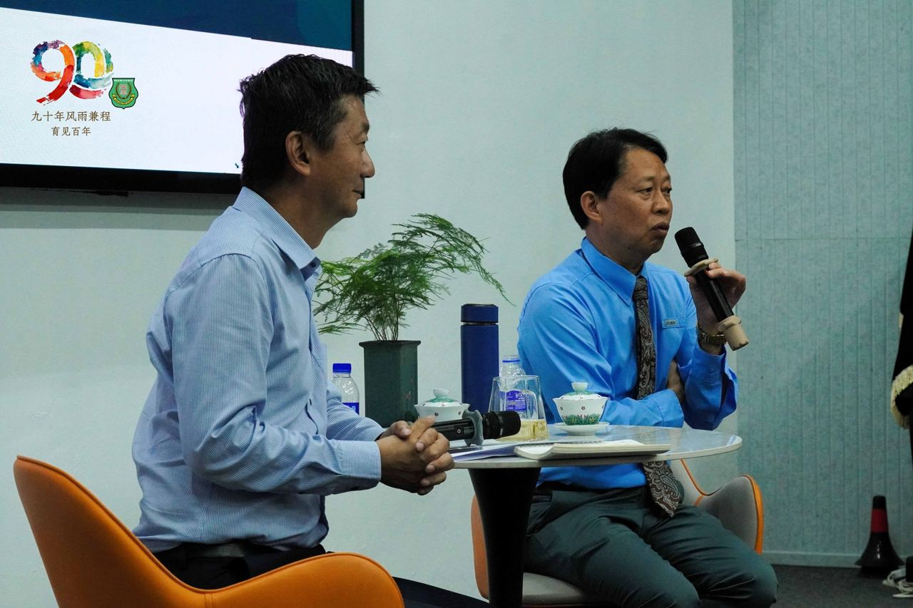
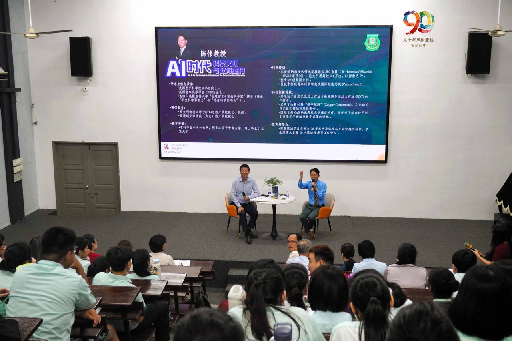
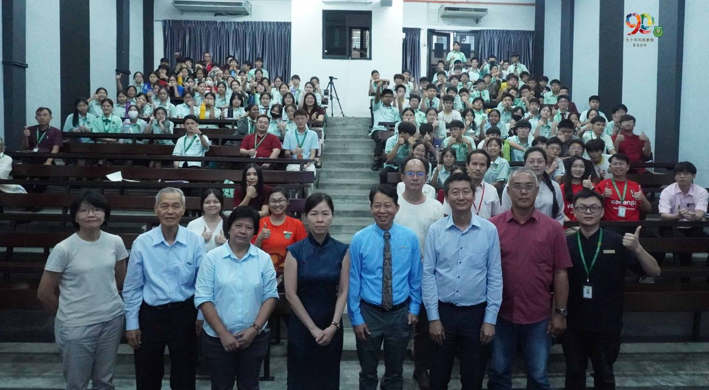
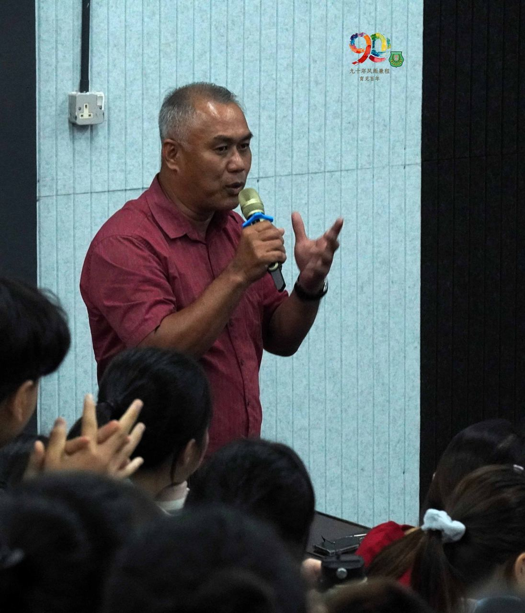
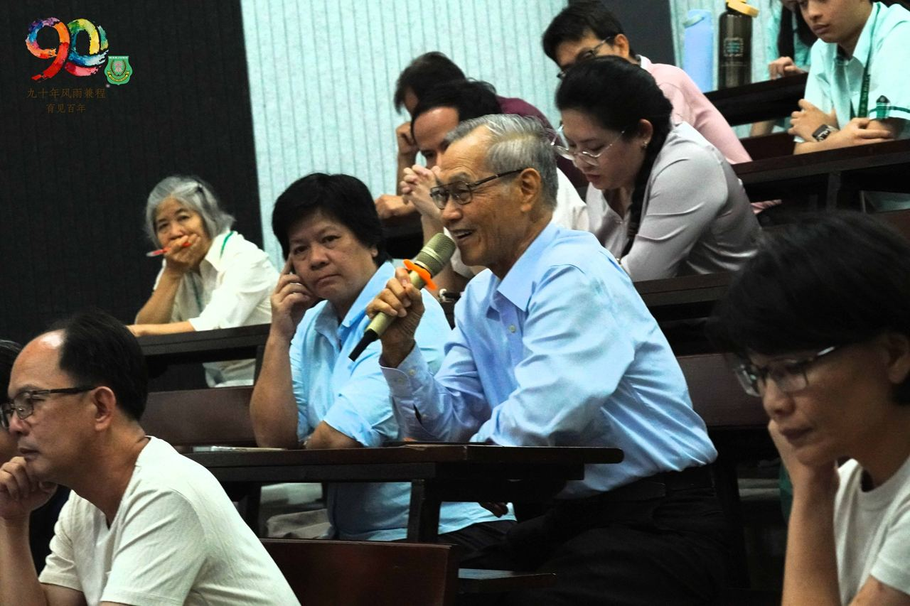
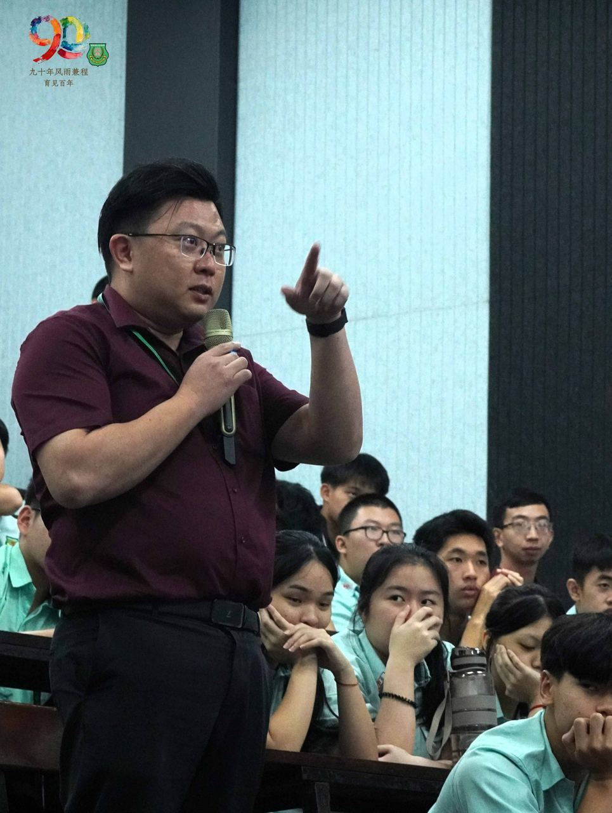
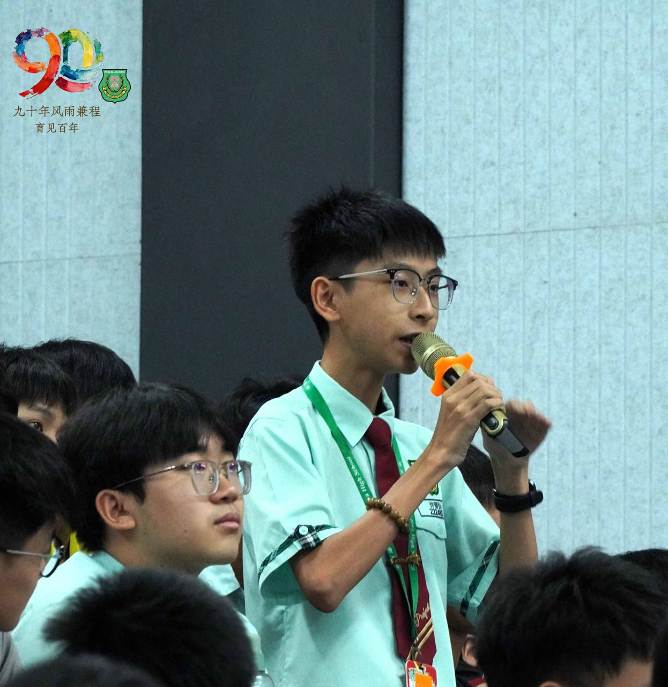
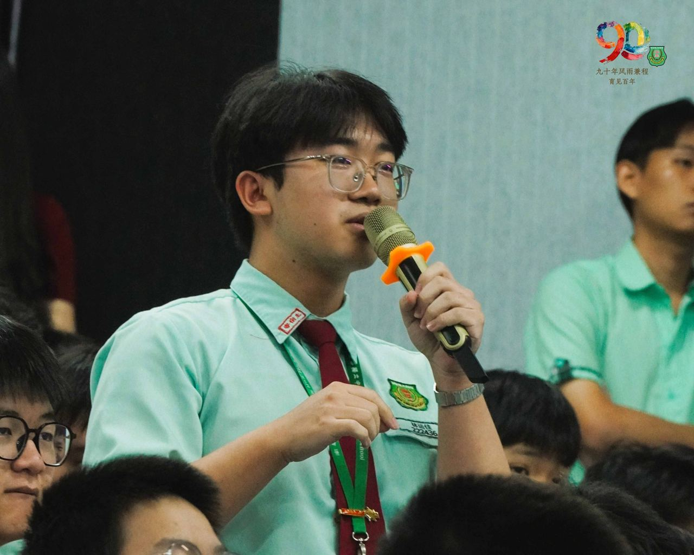

南华独中90周年校庆教育研讨会系列报道之一
南华独中90周年校庆教育研讨会系列报道之一
陈伟教授与颜登逸董事长
当芯片遇见课堂：纵论AI时代的教育重塑
晨光甫至，南华独中讲堂已逾百人落座。现场是来出席参加90周年校庆系列教育研讨会的第一场座谈会，主题聚焦于AI浪潮下的教育转型。台上坐着的，是一位手握芯片研究经验的学者与一所守护母语教育也推动教改的独中掌舵人，一场关乎未来教育的深度对话，就此展开。
主讲人陈伟博士现为西交利物浦大学芯片学院院长，同时身兼美国国家发明家科学院院士。他以科研者的视角切入，围绕三个核心议题展开论述：AI时代科技革命所引发的社会结构性变化、教育如何培育面向未来的人才，以及整体教育体系的转型方向。
陈博士不拘学术套话，不时援引自身在芯片领域的研究体会作为比喻与引申，将宏观的教育命题与微观的技术现实紧密勾连，令在场者既能把握时代脉络，又不至迷失于抽象概念之中。
与谈人颜登逸董事长以南华独中为起点，从办学实践的角度与陈博士展开对话，将宏观教育议题拉回到一所具体学校、一群具体学生的日常现场。
两人一来一往之间，宏观与微观互为映照，学术氛围浓厚而不失温度。
当话题延伸至办学愿景，陈博士顺势将麦克风递交给坐于观众席第一排专注聆听校长陈丽冰博士，请其就南华独中的教育理念与方向直接发言。这一自然接力，令座谈会的对话层次更为立体：从外部学者的观察，到董事会的决策视角，再到学校行政的具体实践，三个维度在同一舞台上交汇。
座谈会对外开放报名，本校全体高中同学亦悉数出席其中。问答环节气氛热烈，提问者或分享个人对AI的亲身体验，或借国际时事为引向主讲人深究其背后逻辑，一问一答之间，知识的重塑正在悄然发生。这种双向流动，或许正是这场座谈会最有力的注脚：
教育与AI之间的关系，不再停留于命题本身，
而已在每一个追问中，开始被重新思考。
出席者包括有本校董事总务何添胜先生，董事副总务林道祥先生







